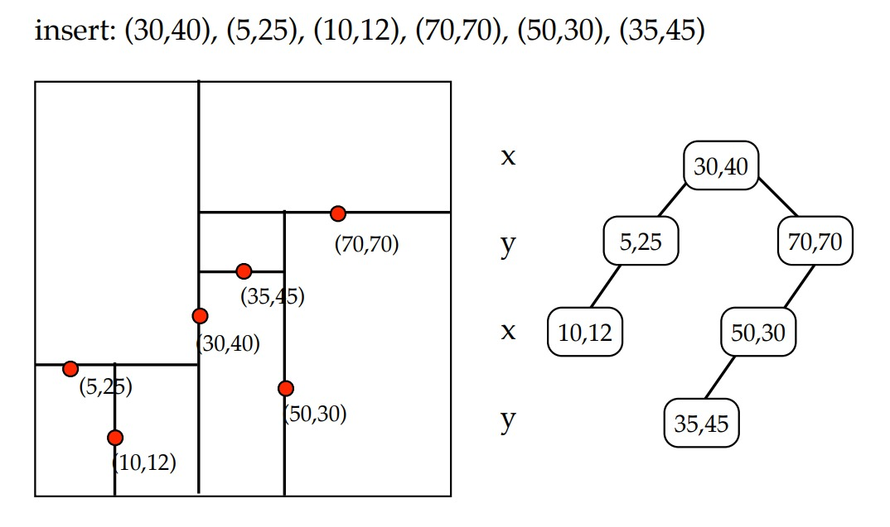

KD Tree (k-dimensional Tree)
Category: Data Structures, Multidimensional Search Tree
Description: A space-partitioning data structure for organizing points in a k-dimensional space. It is widely used for nearest neighbor searches and range queries in multidimensional datasets.
📦 Business Case (Where & How to Use):
- Multidimensional data search: KD Trees allow efficient searching of points in multiple dimensions, used in geographic information systems (GIS), robotics, and computer graphics.
- Nearest neighbor queries: Key for recommendation systems, pattern recognition, and machine learning models like K-NN classifiers.
- Spatial indexing: Useful in databases and cloud services that handle multi-attribute data for fast lookup and retrieval.
- Collision detection and ray tracing: KD Trees speed up queries in 3D rendering and physics simulations.
🧠 How It Works?
- Splits the dataset along one dimension at each level, cycling through dimensions.
- Constructs a binary tree that partitions points into hyperrectangles.
- Search queries recursively prune branches that can’t contain the target point.
📊 Visualization

KD Tree Example Visualization
👩💻 View Code
Click here for code
🧮 Complexity Analysis
- Build: O(n log n)
- Search: Average O(log n), worst O(n)
- Space: O(n)